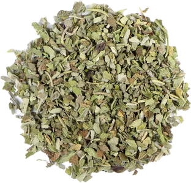

Salvia officinalis
Overview
Sage is an aromatic herb in the mint family, native to the Mediterranean region. It has gray-green leaves and produces small blue or purple flowers and is prized for its strong, earthy flavor and aroma. Sage is commonly used fresh or dried as a culinary herb and seasoning.
Cultural Overlap
Sage is used in cuisines around the world, particularly in Mediterranean, Italian, Middle Eastern, and American cuisines. It is used to flavor meats, poultry, fish, vegetables, sauces, stuffings, and bread. Sage also has cultural significance in traditional medicine and folklore, where it is believed to have various health benefits and protective properties.